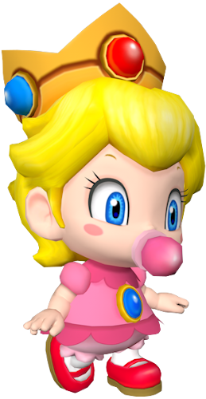

En el juego Yoshi's Island, primer juego en que apareció junto a Baby Mario, Baby Luigi se mostraba como un bebé indefenso con una gorra verde con la letra "L" y un pañal como vestimenta, considerándose como una versión infantil de Luigi. Posteriormente salió con la misma apariencia en Yoshi's Island DS, aunque a diferencia de que Baby Mario ya no se mostraba tan indefenso, Baby Luigi seguía desempeñando el mismo papel que en el juego anterior tras ser capturado por Kamek.
En el resto de juegos en que ha aparecido su aspecto cambia. Sigue usando la gorra verde con la "L", pero además hace uso de un mono de color azul y polo verde, similar a Luigi. No obstante y a diferencia de este, Baby Luigi es más rápido como se puede apreciar en los juegos de Mario Superstar Baseball y Mario & Luigi: Partners in Time, considerándose un personaje pequeño en los juegos de Mario Kart en los que ha aparecido.
Bebé Mario es un personaje ficticio perteneciente a la serie de juegos de Super Mario Bros.. Fue diseñado por Shigeru Miyamoto y apareció por primera vez en el juego Yoshi's Island de Super Nintendo. Bebé Mario es simplemente Mario cuando era un niño.
En el resto de juegos en que ha aparecido su aspecto cambia. Sigue usando la gorra roja con la "M", pero además hace uso de un oberol de color azul y polo rojo, similar a Mario. No obstante y a diferencia de este, Bebé Mario es más rápido como se puede apreciar en los juegos de Mario Tennis, Mario Superstar Baseball y Mario & Luigi: Partners in Time, considerándose un personaje pequeño en los juegos de Mario Kart en los que ha aparecido.
Ella aparece como un personaje clave, su contraparte adulta, El planeta Shroob, la Reina de dicho planeta, amenaza al Reino Champiñon de conquistarlos, Nuestros Fontaneros ayudan a rescatar al la pequeña peach. Cuando la princesa Shroob se disfraza de princesa Peach y sigue a los hermanos en el futuro, Bebé Peach es agitada por la princesa alienígena y llora. Más tarde, los adultos se dan cuenta de su error y la gestión para combatir la princesa Shroob atrás en el pasado. Después de la derrota de los hermanos Shroobs, liberar el Reino Champiñón del pasado, y salvar el futuro la Princesa Peach, su regreso al futuro. Utilizando la máquina del tiempo de Fesor, Babe Peach, Maestro Kinopio (Joven), Bebe Mario y Bebe Luigi vuelven al presente.
Esto lo hacía desde los primeros juegos de la serie (Super Mario Bros. y Super Mario Bros. 3), ya que en Super Mario World, Lakitu además de arrojar los ya mencionados Spiny usa cañas de pescar con Setas que aumentan una vida o con Boos, y en Super Mario 64, Lakitu toma el control de la cámara en el juego desde su nube. Después de este juego se le ha visto en pequeñas apariciones con su caña de pescar como en los juegos de Mario Kart con el marcador para el arranque. En Paper Mario aparecen Lakitus en los Campos Floridos arrojando los Spinys, al igual que en los primeros Marios, estos últimos también aparecen como enemigos, también aparece Lakilester, un lakitu que se une a Mario en su lucha contra Bowser. Luego, también en Super Mario Galaxy 2 aparece su jefe que se le considera Rey Lakitu, es más grande a los tamaños normales de sus servidores los Lakitu.
Luigi es el hermano menor de Mario, aunque más alto que él en los videojuegos de Nintendo. Primero apareció en el juego de arcade, Mario Bros. (1983), luego en Super Mario Bros. como segundo jugador, papel que continuó desempeñando en Super Mario Bros. 3 y Super Mario World. El nombre de Luigi fue inspirado por el restaurante de pizzas cerca de la sede de Nintendo of America en Redmond Washington, que se llamaba "Mario & Luigi".
Debido a las limitaciones del software en esa época, Luigi empezó con un diseño similar al de Mario, pero con un cambio de paleta en el que predominaba el color verde. Años más tarde, al mejorar la tecnología, fue cuando Luigi cambió físicamente, se hizo más alto y más delgado que su hermano mayor. Luigi se caracteriza por vestir con camisa de color verde con un overol de mezclilla azul, guantes blancos, zapatos marrones y una gorra verde que tiene inscrita una «L», que es la primera letra de su nombre.
Desde sus primeras aventuras, tales como "Super Mario Bros.", "Super Mario Land", "Super Mario World", etc. Ha sido un personaje amable y de noble corazón con un sentido del deber admirable, siempre tiene una solución para los problemas y utiliza cualquier cosa que tenga a su disposición, usando la creatividad para lograr su objetivo, además es muy sencillo y amable.
La forma de ataque más habitual de Mario es saltar para pisotear las cabezas de los enemigos, que se usó por primera vez en Super Mario Bros. Este movimiento de salto de golpe puede aplastar por completo a los enemigos más pequeños en el escenario y, por lo general, inflige daño a los más grandes, causando a veces efectos secundarios.
La Princesa Peach tiene el cabello largo y rubio, ojos azules, una figura de reloj de arena y una tez blanca. En los juegos de la saga y spin offs, Peach se presenta con una estatura superior a la de la mayor parte de personajes humanos, siendo solo más baja que Pauline, Waluigi, entre otros.
Por lo general lleva un vestido color rosa, el cual cuenta con adornos de volantes, mangas cortas hinchadas y faldón con múltiples capas de enaguas. Sus accesorios son zapatos de tacón de color fucsia, guantes largos de noche blancos, un broche de zafiro, aretes de zafiro y una corona de oro adornada con zafiros y rubíes. En los juegos deportivos, lleva un conjunto deportivo (de un tono rosa más claro que el que suele llevar), que va desde shorts y una camiseta. En spin-offs de Tenis o golf lleva una túnica rosada con un motivo fucsia.
Son los habitantes del Reino champiñón. Su característica principal es sus grandes sombreros de seta de diversos colores y su gran habilidad para organizar fiestas (como en Mario Party 4, donde al lado de Goomba, Koopas, Boos y Shy Guys organizaron la fiesta). Son gente de actitud pacífica, que le guarda un gran cariño y respeto a la Princesa Peach, mas no hacia su padre, el Rey Hongo.
Según el argumento de varios videojuegos, Yoshi desciende de la raza de Yoshi introducida en Super Mario World, la cual se caracteriza por variar el color de piel entre sus individuos.1 De todos los individuos de dicha especie, se destaca solo uno que suele acompañar a Mario o Luigi, es de color verde y recibe el nombre de Yoshi.
Yoshi comparte características con aquellas de un dinosaurio bípedo, posiblemente un T-Rex, un Allosaurio o un Gorgosaurio. Yoshi puede caminar en sus extremidades inferiores, tiene extremidades superiores cortas, espinas rojas que recorren la mitad superior de su columna, hocico redondo, un caparazón rojo que se asimila a una montura y tiene una lengua prensil, diseñada para cazar alguna presa. Yoshi utiliza un par de botas de exterior. Aparte, como lo muestran varios videojuegos de la saga de Mario y el modo historia de Super Smash Bros. Brawl, Yoshi suele dormir mucho.